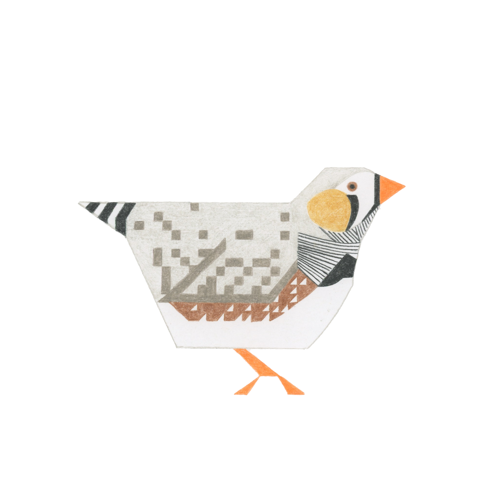

Elizabeth A. Watkins is our Finch. Her background is in Journalism and User Research, with a focus on qualitative analysis.
Elizabeth joined American Cyborg on September 1st, 2015.
Finch has collaborated with Bluebird on many Excelsior! essays. She also directed our user research for Rookery.
2RO: User Interviews
3EX: Random Trees